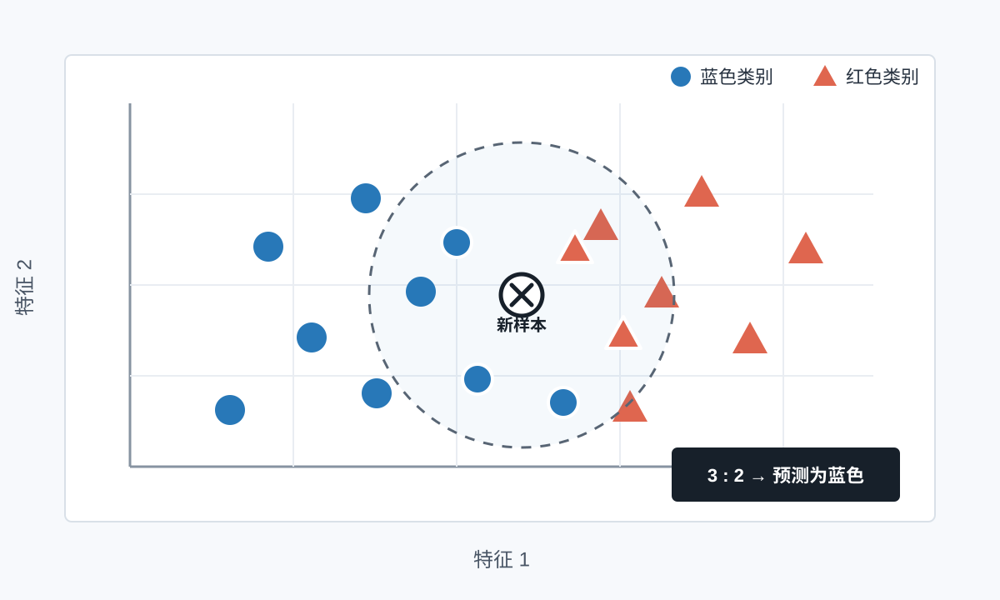
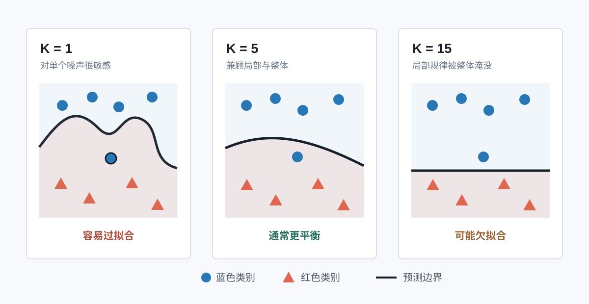

假设你刚搬到一座陌生城市，想判断一家新餐馆是不是合你口味。一个很自然的办法是：找到和你口味最接近的几位朋友，听听多数人的意见。K 近邻算法做的事情几乎一模一样，只不过它找的“朋友”是数据里的已知样本。
读完你会做到
- 看懂“特征、距离、邻居、投票”分别是什么
- 不用代码也能手算一次 KNN 分类
- 从零写出一个能复用的 Python 分类器
- 知道怎样选 K、为什么要归一化，以及怎样判断模型好不好
一、KNN 到底在做什么
KNN 是一种监督学习算法。“监督”并不是有人盯着程序，而是训练数据已经带着正确答案。每一条旧数据都包含两部分：
- 特征：用来描述对象的数字，例如一部电影的打斗场面数量、情感对白数量。
- 标签：我们已经知道的类别，例如“动作片”或“爱情片”。
当一条没有标签的新数据出现时，KNN 只做三件事：计算它到所有旧数据的距离，找出最近的 K 个邻居，让这些邻居投票。

这里的字母 K 表示“要参考几个邻居”。如果 K = 1，只听最近那个人的；如果 K = 5，就听最近五个人的多数意见。KNN 的核心因此可以压缩成一句话：
离我最近的 K 个已知样本，多数属于哪一类，我就预测为哪一类。
二、先不写代码，手算一次
我们用一个只有两个特征的小例子。现在有 6 个已经分类的样本，每个样本都可以画成平面上的一个点。A 类和 B 类各有 3 个，新样本 X 的坐标是 (3, 3)。
| 样本 | 横坐标 x | 纵坐标 y | 已知标签 |
|---|---|---|---|
| A1 | 1.0 | 1.0 | A 类 |
| A2 | 1.5 | 2.0 | A 类 |
| A3 | 2.0 | 1.5 | A 类 |
| B1 | 4.0 | 4.0 | B 类 |
| B2 | 4.5 | 5.0 | B 类 |
| B3 | 5.0 | 4.5 | B 类 |
第 1 步：算出新样本到每个旧样本的距离
平面上两点之间常用欧氏距离，也就是直尺量出来的直线距离。新样本 X 是 (3, 3)，A2 是 (1.5, 2)，它们的距离为：
d(X, A2) = √[(3 − 1.5)² + (3 − 2)²] ≈ 1.80
对另外 5 个样本重复同样的计算，得到：
1.411.801.802.502.502.83第 2 步：取最近的 K 个邻居
设 K = 3，那么只看距离最小的三个样本：B1、A2、A3。
第 3 步：投票
B 类得到 1 票，A 类得到 2 票，所以新样本 X 被预测为 A 类。到这里，你已经完整执行了一次 KNN 分类。
三、把手算过程翻译成 Python
下面先安装并导入 NumPy。它能让我们一次计算新样本到所有训练样本的距离。
python -m pip install numpy这是一个完整、可直接运行的 KNN 分类器。代码只有四个核心动作：相减、求距离、排序、投票。
from collections import Counter
import numpy as np
def knn_predict(train_features, train_labels, new_sample, k=3):
"""根据最近的 k 个训练样本，预测 new_sample 的类别。"""
features = np.asarray(train_features, dtype=float)
sample = np.asarray(new_sample, dtype=float)
if features.ndim != 2:
raise ValueError("train_features 必须是二维数据")
if len(features) != len(train_labels):
raise ValueError("每个训练样本都必须有一个标签")
if sample.shape != (features.shape[1],):
raise ValueError("新样本的特征数量必须和训练数据一致")
if not 1 <= k <= len(features):
raise ValueError("k 必须在 1 到训练样本数量之间")
# 1. 新样本分别减去每个训练样本
differences = features - sample
# 2. 对每一行计算欧氏距离
distances = np.sqrt(np.sum(differences ** 2, axis=1))
# 3. 取得距离最小的 k 个样本下标
nearest_indices = np.argsort(distances)[:k]
nearest_labels = [train_labels[index] for index in nearest_indices]
# 4. 返回票数最多的标签
predicted_label = Counter(nearest_labels).most_common(1)[0][0]
return predicted_label
train_features = np.array([
[1.0, 1.0],
[1.5, 2.0],
[2.0, 1.5],
[4.0, 4.0],
[4.5, 5.0],
[5.0, 4.5],
])
train_labels = ["A", "A", "A", "B", "B", "B"]
result = knn_predict(train_features, train_labels, [3.0, 3.0], k=3)
print(f"预测结果：{result} 类")运行后会得到：
预测结果：A 类逐行理解最关键的四句
features - sample：让每个旧样本分别减去新样本，得到各个特征相差多少。np.sum(differences ** 2, axis=1)：先把差值平方，再按行相加。axis=1可以理解成“每个样本自己算自己的”。np.argsort(distances)[:k]：把距离从小到大排序，只取前 K 个样本的下标。Counter(...).most_common(1)：统计邻居标签的票数，并取票数最多的类别。
真实项目里还需要约定“票数相同时怎么办”。常见做法是让距离更近的邻居优先，或者给越近的邻居越高的投票权重。后面的 scikit-learn 示例可以直接使用距离加权。
四、K 应该选多大
K 没有一个适合所有数据集的固定答案。它决定算法听多少人的意见，也决定模型是更敏感还是更平滑。

K 太小
模型非常相信最近的少数样本。边界会很曲折，对噪声和错误标签敏感，容易过拟合。
K 太大
很远的样本也加入投票，局部规律可能被多数类淹没，容易欠拟合。
适合初学者的选择方法
- 先从较小的奇数开始，例如
3、5、7、9。二分类时用奇数可以减少平票。 - 把数据分成训练集和验证集。训练集用来提供邻居，验证集用来模拟未见过的数据。
- 让多个 K 值分别预测验证集，记录准确率。
- 选择验证效果好、同时不过分大的 K，而不是挑训练集上最好的 K。
常见经验是先尝试不超过训练样本数平方根附近的若干奇数，但这只是搜索起点，不是定律。最终要以验证结果为准。
五、为什么必须注意数据尺度
假设我们用“年龄”和“年收入”判断用户类型。年龄通常是几十，年收入可能是几十万。两个人年龄差 10 岁、收入差 10 万元，直接计算距离时，收入这一列会完全压过年龄这一列。
原始距离 ≈ √(10² + 100000²)
这不代表收入一定比年龄重要，只是它的数字单位更大。解决方法是特征缩放，把不同列变到可比较的范围。最常见的两种方式是：
- 标准化：每列减去平均值，再除以标准差。多数 KNN 场景优先尝试它。
- 最小最大归一化：把每列压缩到 0 到 1 之间。
六、用 scikit-learn 完成一次正规训练
从零实现适合理解原理；实际项目更建议使用成熟库。下面用鸢尾花数据集完成一个完整流程：划分数据、标准化、训练、预测、评价。
python -m pip install scikit-learnfrom sklearn.datasets import load_iris
from sklearn.metrics import accuracy_score, classification_report
from sklearn.model_selection import train_test_split
from sklearn.neighbors import KNeighborsClassifier
from sklearn.pipeline import make_pipeline
from sklearn.preprocessing import StandardScaler
# 1. 读取数据：X 是花朵特征，y 是花的品种
iris = load_iris()
X, y = iris.data, iris.target
# 2. 留出 20% 作为测试集；stratify 保持各类别比例接近
X_train, X_test, y_train, y_test = train_test_split(
X,
y,
test_size=0.2,
random_state=42,
stratify=y,
)
# 3. Pipeline 保证先用训练集完成标准化，再训练 KNN
model = make_pipeline(
StandardScaler(),
KNeighborsClassifier(n_neighbors=5, weights="distance"),
)
# 4. 训练、预测、评价
model.fit(X_train, y_train)
y_pred = model.predict(X_test)
print(f"准确率：{accuracy_score(y_test, y_pred):.2%}")
print(classification_report(y_test, y_pred, target_names=iris.target_names))
# 5. 预测一朵新花；四个数字依次对应四项花朵特征
new_flower = [[5.1, 3.5, 1.4, 0.2]]
predicted_index = model.predict(new_flower)[0]
print("预测品种：", iris.target_names[predicted_index])这里有三个容易忽略的细节：
random_state=42固定随机划分，方便你下次运行时复现结果；数字 42 换成别的整数也可以。make_pipeline把标准化和模型绑在一起，能减少数据泄漏和漏做预处理的风险。weights="distance"让更近的邻居拥有更大权重，不再是每个邻居都只有一票。
七、怎样找到更合适的 K
只试一个 K 不够可靠。下面用 5 折交叉验证比较 1 到 20。所谓 5 折，就是把训练数据轮流分成 5 份：每次用其中 4 份训练、1 份验证，最后取 5 次成绩的平均值。
from sklearn.model_selection import cross_val_score
best_k = None
best_score = 0.0
for k in range(1, 21):
candidate = make_pipeline(
StandardScaler(),
KNeighborsClassifier(n_neighbors=k),
)
scores = cross_val_score(candidate, X_train, y_train, cv=5)
mean_score = scores.mean()
print(f"K={k:2d}，平均验证准确率={mean_score:.3f}")
if mean_score > best_score:
best_k = k
best_score = mean_score
print(f"推荐 K={best_k}，平均验证准确率={best_score:.3f}")数据量更大、参数更多时，可以使用 GridSearchCV 自动搜索。无论用哪种工具，原则都一样：用验证过程选参数，测试集只留到最后做一次客观检查。
八、KNN 能做什么，不能做什么
适合它的情况
- 数据量不大，特征含义清楚
- 相近样本通常拥有相近答案
- 需要一个容易解释的入门基线
- 分类边界不一定是直线
需要谨慎的情况
- 样本很多，预测时逐个算距离会变慢
- 特征特别多，距离会逐渐失去区分度
- 无关特征多，噪声会干扰邻居关系
- 类别极不平衡，多数类容易占据投票优势
KNN 也能做回归。分类时邻居投票；回归时不投类别，而是把邻居的数值答案求平均。例如根据附近房屋的面积、楼龄和位置，估计一套房子的价格。
九、新手最常踩的 6 个坑
- 忘记标准化。数字范围最大的特征主导了距离，模型学到的不是你想表达的重要性。
- 直接在测试集上挑 K。测试集就不再客观。应该在训练集内部用验证集或交叉验证选 K。
- K 比训练样本还大。邻居根本不够，程序应提前检查并报出清楚的错误。
- 认为 K 越小越精确。
K = 1虽然能记住训练数据，却可能被噪声轻易带偏。 - 只看总体准确率。类别不平衡时，还要看每一类的精确率、召回率和混淆矩阵。
- 把类别编号当连续数值。邮编、商品编号等只是标识，数字差值通常没有距离意义，不能直接放进欧氏距离。
十、用一张清单完成自己的 KNN 项目
- 01定义问题
要预测的是类别还是连续数值？哪些旧数据带有可靠答案？
- 02准备特征
删除明显无关的信息，把文字类别正确编码，并处理缺失值。
- 03划分数据
先保留测试集；调参只在训练集内部进行。
- 04统一尺度
只在训练集上拟合标准化器，并用同一规则转换其余数据。
- 05选择 K
用验证集或交叉验证比较一组候选值。
- 06最终评价
在从未参与调参的测试集上检查模型，并记录完整流程。
最后，把 KNN 记成四个词
距离排序邻居投票
看到新样本，先算它和所有旧样本的距离；把距离从近到远排序；取前 K 个邻居；最后让邻居投票。KNN 的全部骨架就在这里。
建议你接下来亲手改动示例中的新样本坐标，再把 K 从 1 改到 3、5，观察预测何时发生变化。能预测变化方向，比只复制一次代码更接近真正学会。